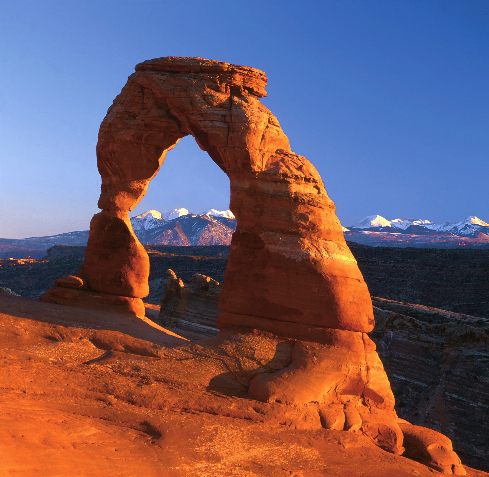
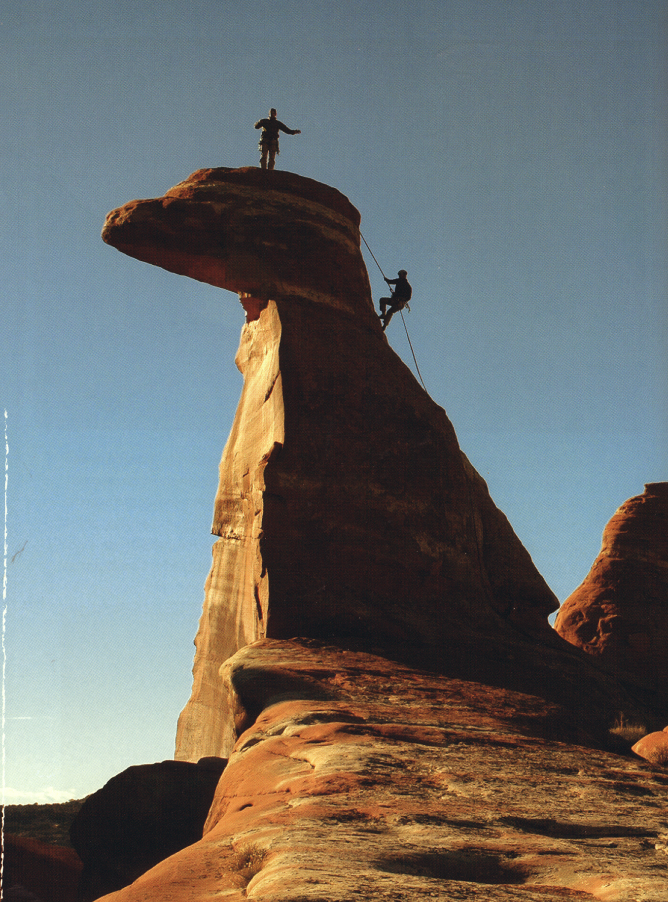
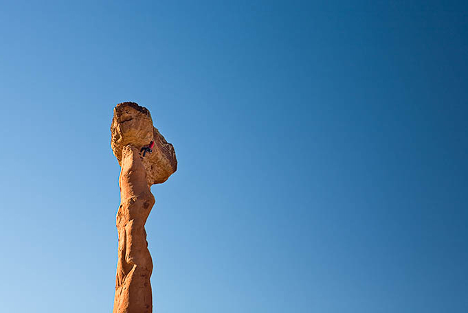
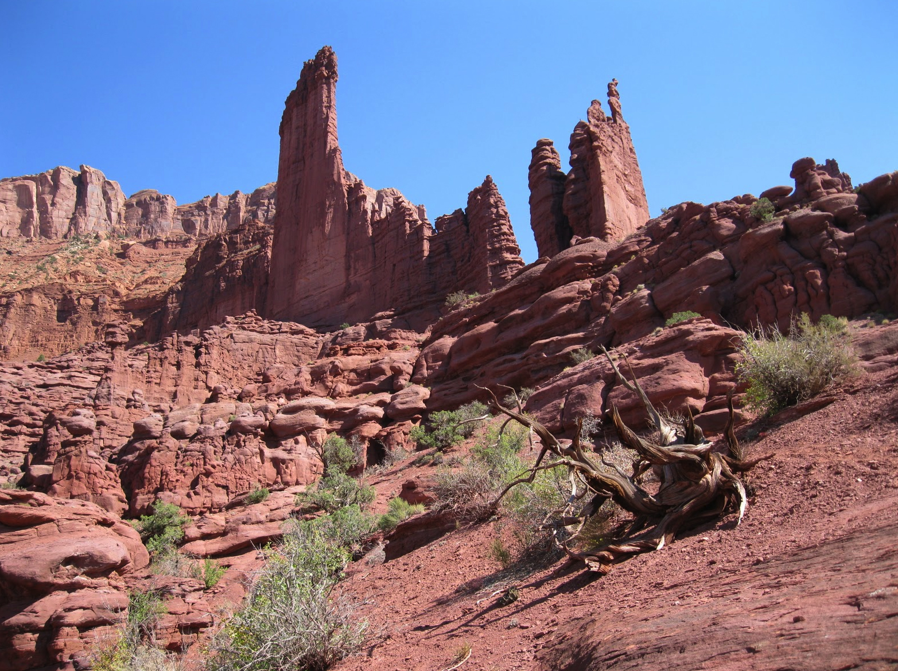
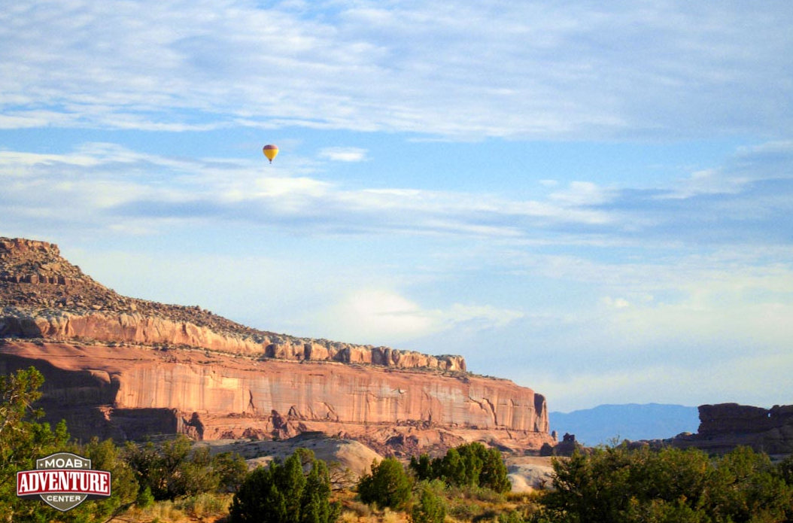

Welcome to ASIC 2014
The Thirteenth Annual Summer Interdisciplinary Conference, held at the Moab Valley Inn in Moab, Utah, June 23–28, 2014.

Delicate Arch, Arches National Park
Moab is in a famously scenic part of the American Southwest, and is a center for a variety of outdoor adventures (see discovermoab.com). The dates for ASIC 2014 were chosen to take advantage of somewhat lower temperatures in the Moab area, and to prevent conflict with the annual meetings of the Cognitive Science Society and the Society for Mathematical Psychology held in Quebec City in late July 2014.
Richard M. Shiffrin of Indiana University – Bloomington is the organizer. Correspondence should be directed to shiffrin@indiana.edu.

Having fun on a typical desert tower
Invitation
The conference is open to all scholars who fit the very general theme of the conference, and their family and friends. An individual invitation is NOT needed. We encourage you to send the conference information to friends and colleagues.
Conference aims
The conference covers a wide range of subjects in cognitive science, including: modeling of cognition; neuroscience and cognitive neuroscience; psychology (perception, psychophysics, attention, information processing, memory and cognition); computer science and artificial intelligence; machine intelligence and learning; methodology and statistics; linguistics, psycholinguistics and computational linguistics; and philosophy of mind and cognitive science. We especially invite talks emphasizing theory, mathematical modeling, and computational modeling.
Conference format
The conference starts with registration and a reception from 15:30–16:15 on Monday, June 23. On subsequent days there are drinks and light snacks from ~15:50–16:15, the talk session from about 16:15–20:00 (with a brief refreshment break midway), and then dinner.
There is a single speaking session each day. If the number of participants exceeds the number of 30-minute speaking slots (about 42), talk times are adjusted and/or speakers are chosen by the organizer. Talk topics each day are not organized by theme: in the spirit of interdisciplinarity, topics are chosen to maximize diversity each day.
This conference format frees most of the day for discussions with colleagues or other activities with colleagues, family, and friends. The time frame allows day trips to nearby sites, but plan to return in time for the sessions.
Schedule & Talks
Speakers each day are listed in order; the session chair (indicated in bold/italic/underline) chooses the order of talks. Each day other than the first starts at 4:15 PM; speakers plan at most 30 minutes for talking plus 5 minutes for questions and discussion.
Day 1, June 23, 4:45 PM
- Bickhard, Mark — The Functional Dynamics of the Central Nervous System
- Colunga, Eliana — Modeling the Emergence and Interactions of Early Word Learning
- Dixon, Peter — Limitations in the control of individual and joint rhythmic action
- MacKay, Don — Creativity, sentence comprehension and the brain: Lessons from amnesic H.M.
- Rouder, Jeff (Chair) — Discrete-states in working memory
Day 2, June 24, 4:15 PM
- Cox, Greg (Chair) — Modeling Information Accumulation in Recognition Memory: Speed-Accuracy Functions and RT Distributions
- Dosher, Barbara — Object attention in moderate precision tasks: An elaborated template model account
- Foster, James — Analogical Reinforcement Learning with Two-Stage Memory Retrieval
- Shiffrin, Rich — A quantum account for a mysterious universal finding
- Teodorescu, Kinneret — Learned Helplessness and Learned Prevalence: Exploring the causal relations of perceived controllability, reward prevalence and exploration
- Westfall, Holly — Improvement in Long-term Memory Retention Created by Learning in an Exploratory State
Day 3, June 25, 4:15 PM
- Cao, Rui — Categorization and Familiarity Processes in Memory Search
- Hanson, Andrew — The Bugcatcher
- Kowler, Eileen — Traveling in and out of blind alleys: Strategies of eye movement planning during maze solving and other tasks
- Little, Dan — How do information processing systems deal with incongruent information?
- Sloutsky, Vladimir (Chair) — Language and Cognition: A Whorfian baby meets non-Whorfian reality
- Steyvers, Mark — Aggregating Human Judgments in Ranking Problems
Day 4, June 26, 4:15 PM
- Allen, Colin — Biographically plausible data sets and big data in the computational humanities
- Jones, Matt — A theory of between-trial variability in diffusion models
- Lewandowsky, Steve (Chair) — Evidence for Removal of Information from Working Memory
- Ramsey, Bill — Rethinking our Conception of Cognition
- Shiffrin, Rich — Moving past BMS and MDL: Making model evaluation rational
- Watanabe, Takeo — Roles of attention and reward in perceptual learning
Day 5, June 27, 4:15 PM
- Cheng, Patricia — Analytic versus Empirical Knowledge of the Concept of Causal Invariance
- Deyoe, Edgar (Chair) — Attentional Field Properties from Single Voxels
- Lu, Zhong-Lin — Quick methods: Bayesian adaptive methods for estimating psychological functions
- Ludwig, Kirk — Is Distributed Cognition Group Level Cognition?
- Rand, Kristina Marie — Attention Requirements of Navigation with Severely Degraded Viewing
- Teodorescu, Andrei — Absolutely Relative or Relatively Absolute — A study of relativity in decision making
Day 6, June 28, 4:15 PM
- Holden, John (Chair) — Attractor Dynamics Support Cognition
- Ketels, Shaw — Testing two pedagogical prescriptions in the use of classroom response systems
- Narens, Louis — Context and Probability Theory
- Sasaki, Yuka — Enhanced Spontaneous Oscillations in the Supplementary Motor Area Are Associated with Sleep-Dependent Offline Learning of Finger-Tapping Motor-Sequence Task
- Sperling, George — Visual Attention Filters for Color
- Vandekerckhove, Joachim — Latent variable methods for data fusion
Registration
You are not officially on the request list for presenting research (talks or posters) until you send the registration fee.
This year the registration fee pays not only for rental of the conference room, equipment rentals, snacks and drinks at conference breaks and the opening reception, but also for catering of breakfasts and dinners. Registration fees are therefore higher than in previous years, but lodging costs are lower, so net costs are similar.
Fee schedule (US dollars)
| Timing | Conference attendees | Friends & family (eating with group) |
|---|---|---|
| Prior to February 1, 2014 | $650 | $500 |
| After February 1, 2014 | $750 | $600 |
Lodging
A block of rooms is held at the Moab Valley Inn, 711 S. Main St., Moab, Utah 84532.
Hotel website: moabvalleyinn.com. Attendees must make their own reservations with the hotel — ask for the ASIC conference rate.
Amenities
The Moab Valley Inn has an indoor/outdoor swimming pool, hot tub, fitness center, and ample parking.
Lodging prices
Rates are for rooms only (in past European ASIC conferences lodging included breakfast and dinner; this year meals are catered separately, so lodging is correspondingly lower and registration fees are higher). Reservations should be made as early as possible, starting in fall 2013.
| Room type | Price per room per day (+13.6% tax) |
|---|---|
| Standard (two queens or one king) | $99 |
| Triple Queen | $130 |
| Suite (two queens or one king) | $125 |
Standard and triple rooms have a refrigerator and coffee maker. Suites add a jetted tub, microwave, sink, bar and small sitting area.
Hotel contact & reservations
Phone: 435-259-4419 · Fax: 435-259-4332
Email: info@moabvalleyinn.com
Food & Dining
Breakfasts, conference breaks, and most dinners are catered at the Moab Valley Inn, with the cost folded into the registration fee.
The Moab Valley Inn has two conference rooms, one used for presentations and the other for dining and breaks. Dining choices include vegetarian options, likely offered buffet style, varying from day to day.
Breakfasts begin at 7 AM (special arrangements can be made if an activity requires an earlier start). Each day the conference begins with light snacks and liquid refreshments from about 3:50 to 4:15, followed by talks (with a 15-minute refreshment break midway), followed by dinner at about 8 or 8:15 PM.
The first day of the conference has a reception from 3:30–4:15 for checking in and obtaining name badges.
Travel
Travel to and about the Moab Valley Inn, Moab, Utah.
For maps of the Moab area, see moabadventurecenter.com/maps.
By plane
Main airports giving access to Moab, by distance:
- Moab Valley Airport, Utah — 16 miles
- Grand Junction Regional Airport, Colorado — 120 miles
- Salt Lake City International Airport, Utah — 240 miles
- Las Vegas, Nevada — 461 miles
Most attendees fly to one of these and rent a car — car rentals in this area are a good value, the drives traverse dramatic scenery, and most sites worth visiting are at driving distance from Moab.
By bus / shuttle
See discovermoab.com/shuttle.htm.
By car
US Highway 70 has an exit 30 miles north of Moab via State Highway 191 — the route taken by most drivers.
Local transport
Some spectacular local sites are best approached with special vehicles such as four-wheel drives with high clearance, available both on organized tours and for local rental (see discovermoab.com/autorental.htm).
Activities
The opportunities for outdoor activities in the summer in the Moab area are endless: walking, hiking, scrambling, rock climbing, canyoneering, slickrock biking, road biking, kayaking, backcountry safaris, and more.
Adjacent to Moab there are two National Parks (Arches and Canyonlands), one State Park (Deadhorse Point), and the Colorado River. A car will be advisable to access most activities and scenic sites.
Hiking

There are numerous hikes of all lengths and difficulties in the National and State Parks and the general Moab area — it is hard to find one that is not both spectacular and surreal. Sun protection and enough water are key considerations, since days start cool but heat up dramatically by noon.
Rock climbing
Climbing around Moab is on red sandstone that varies widely in quality: Wingate sandstone is hard and supports crack climbing; Entrada sandstone is softer and rounded; Cutler sandstone is a conglomerate. A good book covering many of the area's climbs is Stewart Green's Best Climbs Moab. We typically arrange one, possibly two, group climbing days for all climbers from complete novices to experts, offered free of charge to attendees, families, and friends.
Tower climbing

The corkscrew atop Ancient Arts, one of thousands of towers around Moab
"Ancient Arts" is perhaps the best of the towers accessible to non-experts, an experience of a lifetime with the help of a guide. Other relatively easy and accessible towers include Castleton Tower; some, like Moses Tower in Taylor Canyon and Washer Woman Tower in Canyonlands, require longer expeditions best planned for days prior to or after the conference.
Sport climbing
The primary sport climbing area is Wall Street, a towering 500-foot cliff directly adjacent to UT 279 (Potash Road), sandwiched between the Colorado River and the cliff, with hundreds of climbs and approximately zero approach.
Crack climbing & bouldering
There is a great deal of crack climbing throughout the area, including the world-renowned Indian Creek. Bouldering is less developed but still possible, with Big Bend among the excellent areas.
Climate, Weather & Clothing
Moab is in the American Southwest on a high desert plateau (altitude 4,021 ft), with hot and dry summer days and mild evenings.

Hot air ballooning near Moab
In June, highs average 93°F and lows average 57°F. There is relatively little rain, with the occasional afternoon or evening shower (June averages about 1/2 inch of rain).
Contact
Email is preferred for all correspondence.
Conference organizer
Rich Shiffrin
Indiana University – Bloomington
shiffrin@indiana.edu
Tel: 812-855-4972 · Fax: 812-855-9871
Webmaster / Conference Coordinator
Ruth Eberle
Phone: (812) 856-5722
reberle@indiana.edu
Patrick Craig
Phone: (812) 856-6037
pjcraig@indiana.edu
Postal address
Annual Summer Interdisciplinary Conference (ASIC 2014)
c/o Prof. Richard Shiffrin, Psychological and Brain Sciences Department
Indiana University, 1101 E. 10th St., Bloomington, IN 47405